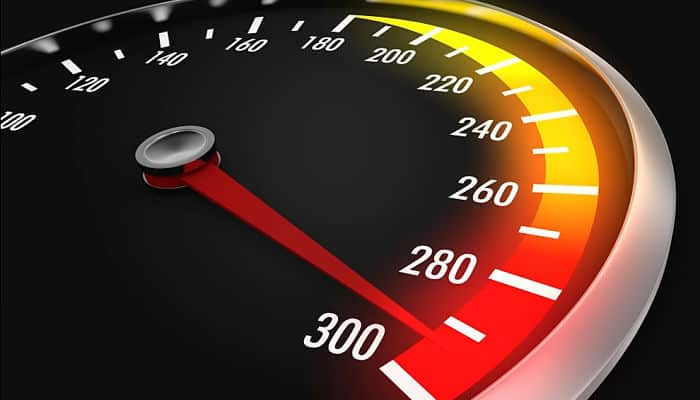

Soy un gran amante de los autos veloces
Uno de los sueños de todo ser humano es poder correr más rápido que el viento y el automóvil siempre ha sido un medio para serlo, por ello, aún se intenta construir un vehículo que supere en velocidad a todos los demás.
A punto de despedir este 2017 y entrar a 2018, es buen momento para hacer un recuento de los autos más veloces del mundo, esos que sin duda sueñas con conducir y oprimir el acelerador a fondo.
Cabe destacar que en este recuento solo se toman en cuenta autos que no son construidos especialmente para competencia. Así que todos listos.